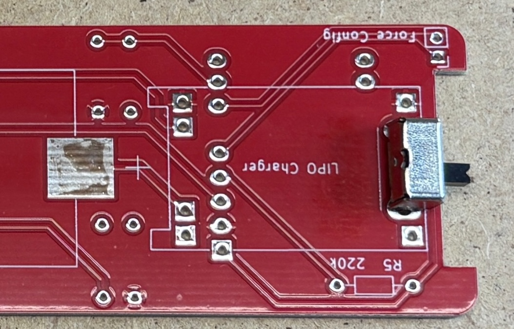
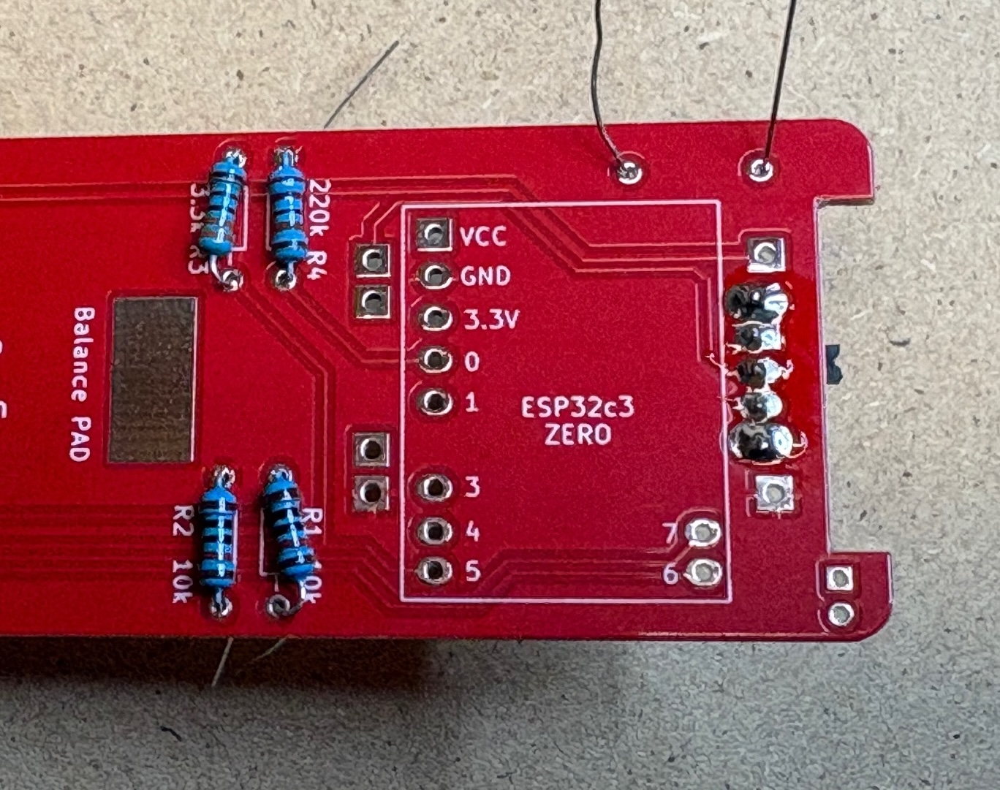
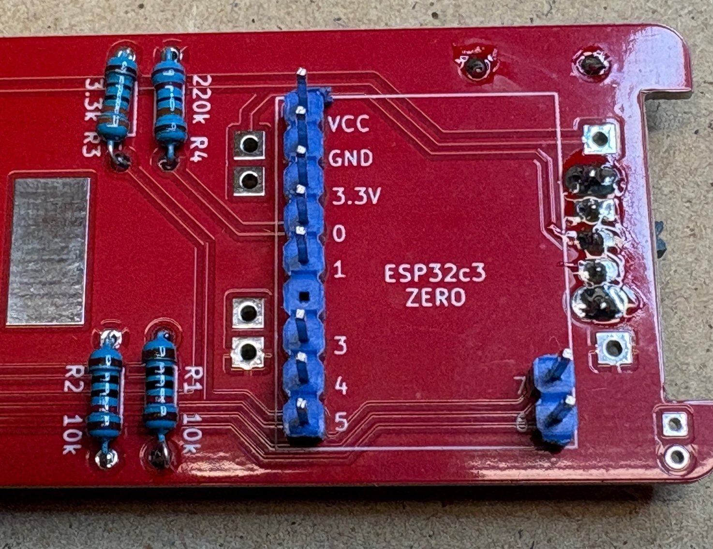
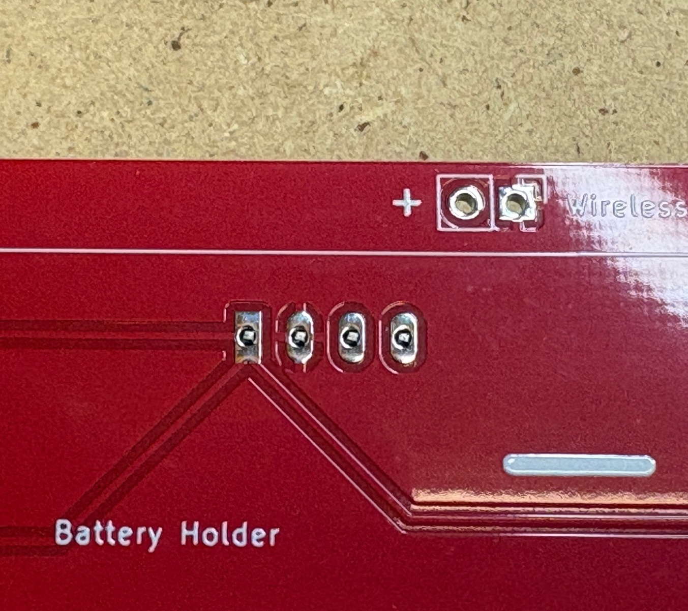
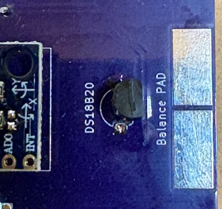

Building a device¶
This is an instruction on how to build a device based on the Gravitymon PCB, the instructions shows the PET PCB but the steps are the same for the PILL PCB.
I recommend to use the v1.2 of the Gravitymon PET PCB which has been converted to use 3.3V for all sensors. Older PCB use the standard iSpindel schematics which will put 5V when charging on the GPIO pins which can damage the ESP32c3. An easy fix for the older PCB is to connect the tempsensor pull-up to 3.3V on the ESP32 (use the inner hole) on the PCB.
Step 1 - Gather components¶
First gather all the components and check that you have everything needed.
These are the components needed.
XL BIG PET Micro Geocaching container (not in picture)
Gravitymon PCB (Order from PCBWAY)
Waveshare ESP32c3 Zero board (18-pin board)
MPU-6050 (GY-521) or ICM-42670-P gyro board
18650 battery holder for surface mount (smt)
18650 battery (not in picture)
Wireless Charging reciver and transmitter (XKT510-24)
Resistor: 2 x 10k 0.25W (R1+R2)
Resistor: 2 x 220k 0.25W (R4+R5)
Resistor: 1 x 3.3k 0.25W (R3)
Charging module TP4056
Switch (SK12D07VG3)
Dallas DS18B20 temperature sensor
{kind=link}
Step 2 - Mount switch¶
First step is to mount and solder the switch, this will be under the charging module so make ure its placed on the correct side.
{kind=link}
Step 3 - Mount resistors¶
Next is to mount and solder all the resistors, these are placed on the side where the value is located as shown in the image below.
{kind=link}
If you are using v1.0 or v1.1 of the PET PCB i recommend to mount the R3 like this so the tempsensor data pin is pulled to 3.3V instead of 5V. This only affects the temperature sensor and not the MPU6050 gyro SDA/SCL pins.

Step 4 - Mount pins for ESP32¶
The pins for the ESP32 needs to be mounted and soldered before the LiPo charger module is mounted or you will not be able to solder the pins under the module.
{kind=link}
Step 5 - Mount LiPo charger¶
Mount and solder the lipo charger, total 6 pins are needed and this should be placed on top of the switch.

Step 6 - Mount gyro pins¶
The gyro pins needs to be mounted so they are flush with the PCB since the battery holder goes on top of the gyro. This also applies the temperature sensor.
{kind=link}
Step 7 - Mount gyro¶
Mount and solder the gyro. Try to mount it leveled with the PCB, a tip is to place something flat between the gyro and PCB to ensure the gyro is leveled.
The image shows the ICM gyro but the MPU-6050 is mounted the same way.

Step 8 - Mount temperature sensor¶
Mount the temperature sensor from the same side as the gyro as indicated by the silkscreen.
{kind=link}
Step 8 - Mount ESP32¶
Next is mounting the ESP32 board, the USD connectior should be facing the edge where the resistor is located and make sure the USB connector is up.

Step 9 - Mount battery holder¶
To mount the battery holder first add some solder to the pads and connectors of the battery holder. It might be neccesarry to cut of a piece of the negative connector on the holder. Then solder the holder to the PCB which will be much easier now that there is solder on both sides.
Try to mount the battery holder as far down as possible, this will give angle in water.

Step 10 - Mount coil¶
Finally its time to mount the coil for wireless charging (optional)

The coils are not relly marked so here is how to identify then correctly.

Completed¶
Now all the components are mounted so its time to flash the software and test / calibrate the device.
Depending on the mounting of the battery holder and also the weight of the battery you might need to add some weights to the lower balance pads. I have got batteries that weigh between 40 and 44g. In this build I had to add 1.5g to the solder pads to get a 24 degree angle in water. Typically any starting value between 20-30 degrees is acceptable, but between 20-25 degrees are optimal.